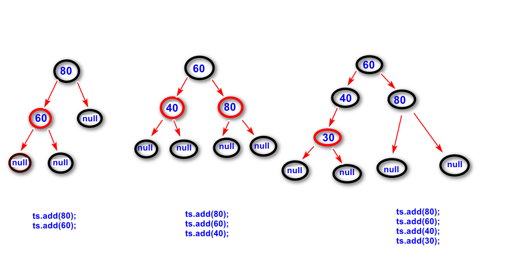

前序遍历:
先访问根节点，然后访问左子树，最后
访问右子树。
对于左子树和右子树，也采用前序遍历。
中序遍历（重点）:
先访问左子树，再访问根节点，最后访问
右子树。
对于左子树和右子树，也采用中序遍历。
后序遍历:
先访问左子树，再访问右子树，最后访问
根节点。
对于左子树和右子树，也采用后序遍历。
对于某个节点，其左子树与右子树的高度差大于１.
如果一树二叉树发生了失衡现象，会影响查找的效率
（二叉树会退化成一个链表）。
要将二叉树重新变成一个平衡的二叉树，需要对二
叉树进行旋转，重新调整节点的位置。
红黑树就是一种将不平衡的二叉树转换成弱平衡的二叉
树的一种算法。
红黑树的规则:
a.节点可以是红色的或者是黑色的。
b.根节点必须是黑色的。
c.叶子节点必须是黑色的。
d.红色节点的子节点必须是黑色的。
e.从根节点到任何叶子节点的路径上，
包含的黑色节点的个数是一样的。

是一种可以依据关键码值(key)进行计算，直接找到
记录的存放位置的一种数据结构。
向散列表添加元素:
step1.先得到关键码值的hashCode。
step2.使用hashCode作为参数，调用散列函数
进行计算，得到一个位置(在散列表中的位置，
散列表是一个数组)。
step3.利用这个位置(下标)查找散列表，看该
位置有没有任何元素,如果没有，则将该元素添加
到该位置，如果有，则调用equals方法进行比较，如果相等，则替换该位置的元素，否则以链表的形式进行添加。
注：
在添加元素的时候，如果元素的个数超过了临界值(临界值等于loadFactor * 容量),则散列表会扩容。
比如，当前散列表的长度(容量)是16,负载因子是0.75,则元素超过12个，散列表就会扩容。
扩容的目的是为了减少地址冲突。
注意频繁的扩容会影响性能，在实际使用时，可以
事先指定好实际需要的容量。
利用散列表找到元素:
step1.先得到关键码值的hashCode。
step2.利用散列函数计算(需要利用hashCode
来进行计算)得到下标。
step3.利用该下标找到散列表中的散列桶，然后
调用equals方法进行比较，找到对应的元素。
hashCode尽量使用具有唯一性特点的属性来生成。
这样，可以减少地址冲突。
Hashtable:线程安全，但是性能不好，淘汰
HashMap:线程不安全，性能好。单线程环境下使用。
ConcurrentMap:线程安全，性能好。多线程环境下使用。
要点:
字符是一个数字，值是unicode编码。
比如 'A' 值是65。
统计一个字符串当中各个数字出现的次数
"1232asdf22esdf"
要点：
不能够将这些数据全部放到内存当中进行比较，
因为内存不够。可以先取出一部分数字，然后将这部
分数字进行排序。然后再取出一部分数字，跟已经
排序的数字进行比较。